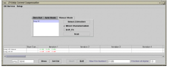

- 00000018WIA30BD9E20GYZ
- id_131067543.1
- Feb 10, 2023 6:12:21 AM
Z2 Eddy Current Compensation (Z2 ECC)
Prerequisites
| Required persons | Preliminary requirements | Procedure | Finalization |
|---|---|---|---|
| 1 | 20 minutes | 6 hours | Not Applicable |
| Item | Quantity | Effectivity | Part number | Manufacturer |
|---|---|---|---|---|
| 3.0T Head Coil | 1 | - | - | - |
| Z2 ECC Phantom | 1 | - |
2376281 | - |
| Z2 ECC Phantom Positioner | 1 | - |
2376291 | - |
| Condition | Reference | Effectivity |
|---|---|---|
|
Gradient calibration must be within specification | - | - |
|
Eddy Current Compensation must be within specification | - | - |
|
LV Shim must be within specification | - | - |
|
No Image Artifacts are present | - | - |
|
BO Compensation Hardware Installed (8 Channel Shim Power Supply, 8 Channel Shim Cables, 8 Channel Shim Filter, Bo Wound CRM Coil) | - | - |
|
Communication with High Order Shim Power Supply is functional. Refer to 3.0T HOS Functional Check Procedure. | - | - |
About this task
If your site needed to perform the Shim Supply Modifications and the Z2 CRM modification as a part of FMI 60648 prior to the upgrade to e2, then Z2 calibrations will need to be performed. You will know if your site needs to perform Z2 ECC calibration if your site has the 8 channel shim supply and the pigtail B0 Shim Cable shown in the Figure 1.

| Last Update | 01/25/2005 |
Introduction
About this task
The effectiveness of high order shimming on the 3T VH/i scanner has a great impact on the image quality (IQ), such as functional imaging and spectroscopy. On the 3T/94 magnet, it has been found that the Z2 component of the high order shimming process contains eddy currents that produce undesired magnetic fields negatively effecting IQ. These undesired magnetic fields need to be measured and compensated for to improve IQ. The Z2 calibration tool uses a specially designed flat rectangular Copper Sulfate phantom. The tool uses an 8-channel High Order Shim Supply to provide the necessary compensation to both a B0 coil that is wound around the CRM coil, and to the Z2 coil. Two channels of the shim supply are allocated for Z2 compensation (for the Z2 component and B0 induced Z2 component). The Z2 ECC tool provides a pre-emphasis compensation for Z2 in a similar fashion to which Grafidy3 provides gradient eddy current compensation for the X, Y and Z gradients. It consists of four parts: graphical user interface (GUI), data acquisition (PSD), and real-time communication using SVAT and data analysis using minilab.The creation of the Z2ECC calibration requires the user to run a localizer scan on a phantom and to adjust its position to within 5 mm as prescribed by the procedure. After the phantom is positioned the user will run the B0 Coil and Z2ECC Functional Check. If the functional check indicates Z2ECC must be run, user will run an automatic script. After selecting Automatic Mode, the tool will automatically characterized the B0 coil running several iterations. It is expected that this process will take 5 to 6 hours to complete.
Z2 ECC Characterization
About this task
The following contains the steps in which the system will configure the Z2 hardware.
Localizer Scan and Phantom Position
Procedure
- Illustration 1 shows the axial, sagittal and coronal images of the phantom.
The image should be at the center of the FOV. In the sagittal view, the phantom
ends should be located at 1=150 (+/-3) and S=150 (+/-3). If the ends of the
phantom do not fall into this range, reposition phantom and return to step
4. If the ends of the phantom fall into this range, continue on to the next
step.
Figure 2. Phantom Localizer Images 
Enable Z2 HO Shim Supply
Procedure
- Open a C-Shell
- type z2download -install Enter (It will download the executable image to the Shim Supply and then reboot the shim supply).
BO Coil Check
About this task
This section makes sure that the BO Coil is connected correctly and shim supply responds correctly.
Procedure
Center Frequency (CF) Stability Check
About this task
This section determines the system response to resistive shim Z2 current inputs. It should be run before and after running Z2 Eddy Current Calibration tool. This check confirms that the Z2 power supply, cables/filters, coil and calibration are correctly working to significantly reduce the time that the center frequency changes when Z2 coil is activated.
Procedure
- The center frequency will shift off the center as in Figure 3. Wait a couple of seconds for it to stabilize.
Figure 3. CF When Z2 Current is Set to 1 Amp 
- Stop the time measurement once the CF has stabilized. See Figure 4. This can take up to 5-10 minutes.
Figure 4. CF When Z2 Current is set to 0 Amps 
Running Z2 Eddy Current Calibration Tool
Procedure
- Click on Auto Mode tab (See Figure 5)
Figure 5. Z2 Eddy Current Compensation GUI 
Selecting Earlier Iteration Results
About this task
This will make sure that the best Z2ECC results will be used to create the calibration file. This section must be performed before you exit the tool.
Procedure
- Then move the cursor to Set Cal and click on it. The best fit result
will not be saved and downloaded to the system. SeeFigure 6.
Figure 6. Setting Calibration File 
Z2 ECC Tool Additional Options
Running Z2 Eddy Current Calibration Tool Manual Mode
About this task
If for some reason the Auto Mode procedure does not bring the numeric output final values of your system completely into specification, you may continue adjusting the value using Manual Mode
Procedure
B0 Coil Characterization
About this task
Test for B0 Coil Characterization. This also provides the user with information on what to expect with regards to B0 fluctuation given Z2 inputs in the resistive shim coil.
Procedure
- Check B0coil Characterization box in the GUI.
- Click Scan button. This will start the B0 coil characterization scan and the iteration will take about 45 minutes. The Scan button will be disabled after the system begins scanning. The Z2 linear performance data should be printed in green text. DO NOT CLICK ON THIS DATA. The B0 performance data should be printed in red text. It should give results between 2.0 and 3.0. The output should look similar to Figure 9.
- Wait until the iteration is complete. (The Scan button will re-enable).
- The B0 scale factors range by:
- Opening a C-Shell Window and typing the following: cd /usr/g/bin/z2eccEnter, ls -l b0_coil_params.txtEnter (I = the letter L in lower case), more b0_coil_params.txtEnter
- The last line of the file b0_coil_params should be between 0.020 and 0.025
- If the values are not in this range, run the B0 Coil Check in BO Coil Check
Figure 9. B0 Coil Characterization in Manual Mode 
Drift Fit
About this task
Drift will perform the Z2 Eddy Current Compensation. It will only begin after the 3rd iteration is complete in the data set in the Z2 ECC GUI.
Procedure
Calibration File Backup after Exiting Z2 ECC Tool
About this task
This allows the user to use previous data recalibrate the Z2 eddy current compensation.
Procedure
Finalization
Finalization
No finalization steps.